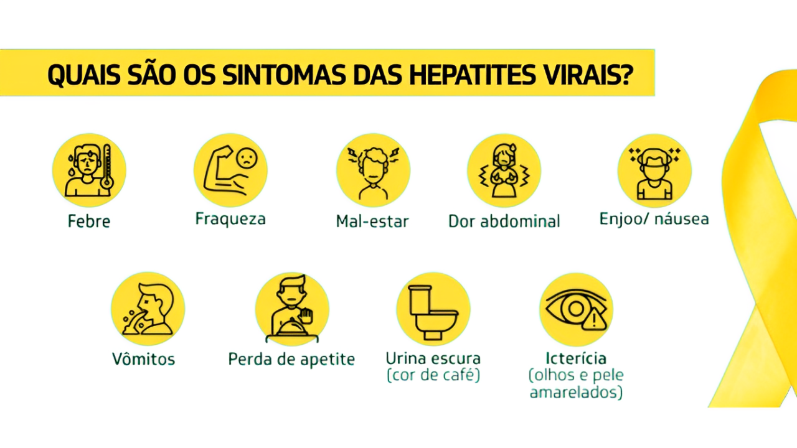
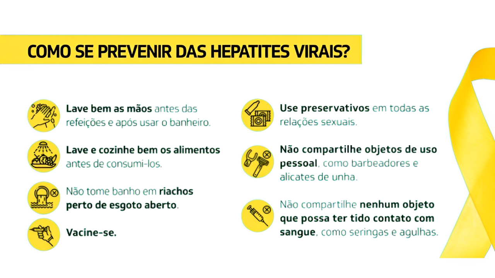

Hepatite: o que é, sintomas, tipos, causas e tratamento
A hepatite é a inflamação do fígado que, na maioria dos casos, é causada por vírus, porém também pode acontecer como consequência do uso indiscriminado de medicamentos, do consumo excessivo de bebidas alcoólicas ou devido a uma alteração autoimune.

Tipos de Hepatites
A hepatite A é causada pelo vírus da hepatite A (HAV), que causa inflamação do fígado e pode provocar alguns sintomas como cansaço, febre baixa, olhos e pele amarelados, enjoo, dor de cabeça e na barriga, por exemplo.
A infecção pelo vírus da hepatite A acontece principalmente através do consumo de água e alimentos contaminados. Além disso, a hepatite A também pode ser transmitida por contato sexual sem proteção, com uma pessoa infectada.
A hepatite B é uma doença causada pelo vírus HBV, que é transmitido quando o sangue, o sêmen ou outros fluidos corporais de uma pessoa infectada entram no corpo de uma pessoa saudável.
Assim, a hepatite B pode ser transmitida através do contato sexual desprotegido, compartilhamento de agulhas ou seringas, ou de uma mãe infectada para o bebê durante a gravidez ou parto, por exemplo. Os sintomas da hepatite B são semelhantes ao da hepatite A.
A hepatite C é causada pelo vírus HCV, que é transmitido pelo sangue, podendo acontecer por meio do compartilhamento de seringas e agulhas usadas para fazer tatuagens, ou administrar drogas injetáveis, partilha de itens de higiene pessoal, como lâmina de barbear ou escova de dente, ou contato sexual desprotegido.
A Hepatite D é causada pelo vírus HDV, causando sintomas como febre, sangramento fácil, confusão mental e pele e olhos amarelados.
Esse tipo de hepatite geralmente surge em pessoas com hepatite B, pois o vírus HDV usa o antígeno de superfície das células do vírus da hepatite B para se multiplicar e infectar as células do fígado.
A hepatite E é uma inflamação causada pelo vírus HEV, provocando hepatite aguda ou crônica e que geralmente não causa sintomas. No entanto, pode causar sintomas como febre baixa, perda do apetite, náuseas ou dor abdominal.
O vírus HEV pode ser transmitido através do consumo de água contaminada, ingestão de carne mal cozida ou de uma mulher grávida para o bebê, por exemplo.
A hepatite F é um subgrupo da hepatite C. No entanto, o vírus dessa hepatite ainda não foi identificado em seres humanos e, por isso, este tipo de hepatite não é relevante.
A hepatite G é causada pelo vírus HGV, sendo geralmente encontrado em pessoas diagnosticadas com hepatite B, hepatite C ou HIV. A hepatite G pode ser transmitida através do contato com o sangue contaminado, em relações desprotegidas, compartilhamento de seringas ou transfusão sanguínea, por exemplo.
A hepatite autoimune é uma doença genética provocada por um erro do sistema imunológico onde os anticorpos atacam as células saudáveis do fígado causando inflamação e provocando sintomas como coceira na pele, dor na barriga, dor nas articulações e perda de apetite.
A hepatite medicamentosa é a inflamação do fígado causada por medicamentos, principalmente quando usados em excesso ou sem indicação médica. Os principais medicamentos que podem provocar esse tipo de hepatite são os que têm capacidade para causar irritação do fígado, como paracetamol ou nimesulida.
A hepatite alcoólica é causada pelo uso prolongado e excessivo de bebidas alcoólicas, causando o surgimento de sintomas como dores abdominais, náuseas, vômitos e perda de apetite, por exemplo.
A hepatite crônica é a inflamação do fígado que dura mais de 6 meses e que pode provocar o desenvolvimento de cirrose ou insuficiência hepática e, conforme a gravidade das lesões, pode ser necessária a realização de um transplante de fígado
A hepatite fulminante é a inflamação grave do fígado em pessoas que possuem o fígado normal ou doença hepática controlada em que o fígado deixa de ser funcional, podendo levar ao óbito em poucos dias.
Principais Causas
- Uso não controlado de medicamentos;
- Consumo excessivo de bebidas alcoólicas.
- Infecção por vírus, principalmente pelos vírus da hepatite A, B, C, D, E e G;
Além disso, a hepatite também pode acontecer como consequência de outras doenças, como lúpus, síndrome de Sjögren, fibrose cística, doença inflamatória intestinal, anemia hemolítica, artrite reumatoide, esclerodermia ou glomerulonefrite.
Como Acontece a Transmissão
As principais formas de transmissão da hepatite de causa infecciosa são:
- Contato com sangue contaminado;
- Consumo de água e alimentos contaminados pelo vírus;
- Compartilhamento de seringas e agulhas;
- Relações sexuais sem uso de preservativo;
- Uso de materiais não esterilizados para fazer tatuagens, piercings ou para fazer a unha, por exemplo.
Outras formas de transmissão menos comuns são a transfusão sanguínea e a transmissão da uma mãe infectada para filho, através da gravidez ou parto.
Como é Feito o Tratamento
Além do repouso e hidratação, o tratamento para hepatite também pode incluir dieta balanceada, abstinência ao álcool, uso de medicamentos e, em alguns casos, o transplante de fígado.
Hepatite tem Cura?
A maioria dos tipos de hepatite têm cura quando a pessoa é diagnosticada inicialmente e tratada adequadamente. No entanto, quando a pessoa não segue o tratamento de forma correta, a hepatite pode evoluir, podendo provocar a morte.

Além disso, é importante também evitar compartilhar objetos de uso pessoal, como lâmina de barbear, escova de dente, material de manicure e pedicure, e equipamentos para fazer tatuagem e colocar piercings.